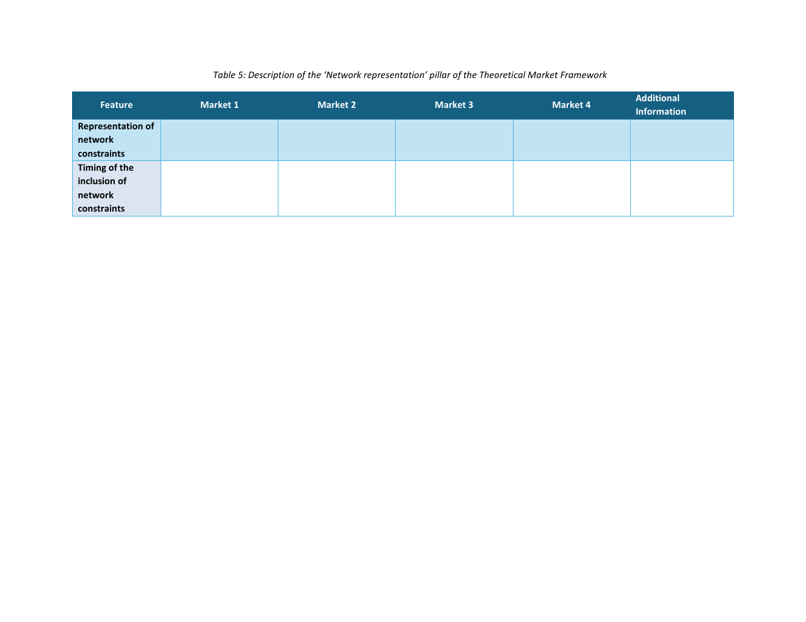

Source-grounded tutorial
How to think about this pillar
This pillar connects market decisions to grid physics. It records the level of network information used and the phase at which network constraints affect procurement or activation.
The physics inside the market
Defines how network constraints are represented and when they enter the market process.
Jump to feedbackSource-grounded tutorial
This pillar connects market decisions to grid physics. It records the level of network information used and the phase at which network constraints affect procurement or activation.

Market-design intelligence
Use this pillar to state how physical feasibility is checked without hiding the data and modelling assumptions.
State whether the market uses comprehensive grid data, partial grid data or empirical rules.
Record when network constraints enter: procurement-area definition, prequalification, procurement, activation, measurement or settlement.
Balance physical fidelity with data, computation and information-sharing requirements.
Theoretical Market Framework feature map
Use this table as both a terminology reference and a data-entry guide for Network Representation.
| Feature | Sub-feature / decision | Data type | Definition | How to read the choice |
|---|---|---|---|---|
| Representation of network constraints | Level/form of representation | Categorical: comprehensive grid data / partial grid data / empirical rules | Modelling approach used to account for physical network limits in the market design. | Select the representation used and describe it if needed. |
| Timing of inclusion of network constraints | Market phase | Multi-select: procurement areas / prequalification / procurement / activation / measurement / settlement | Phase(s) at which network feasibility information influences the acquisition process. | Select all phases where grid constraints are applied. |
For each Market 1-4, record the network representation and the phase(s) where constraints enter the process.

Expert feedback
Does this pillar capture how and when network constraints enter the market so that results remain physically feasible?
Open the discussion to comment here through the project GitHub Q&A thread. Any one of the three feedback actions completes this pillar in the review progress.